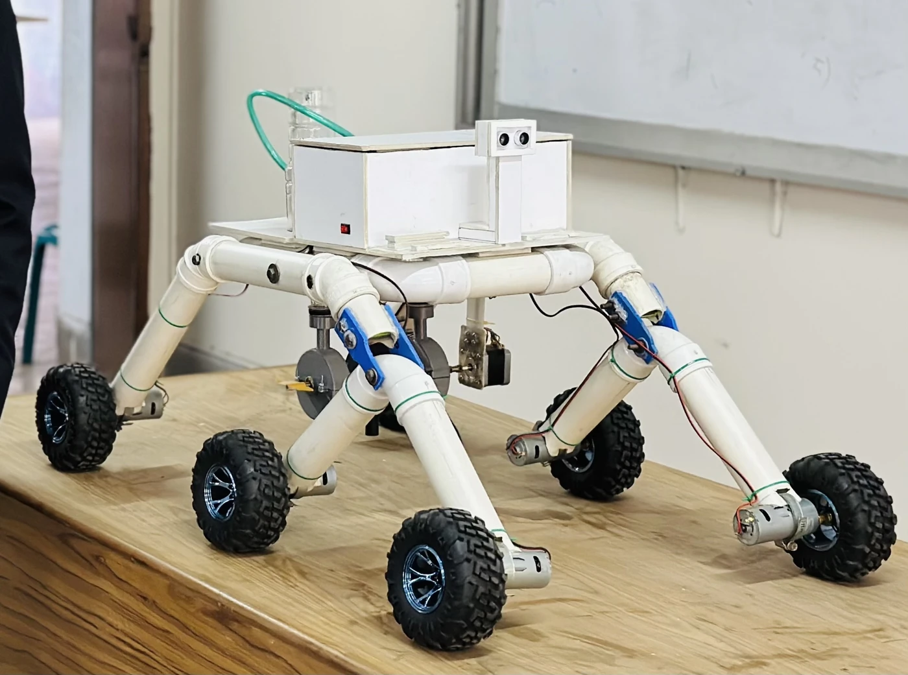
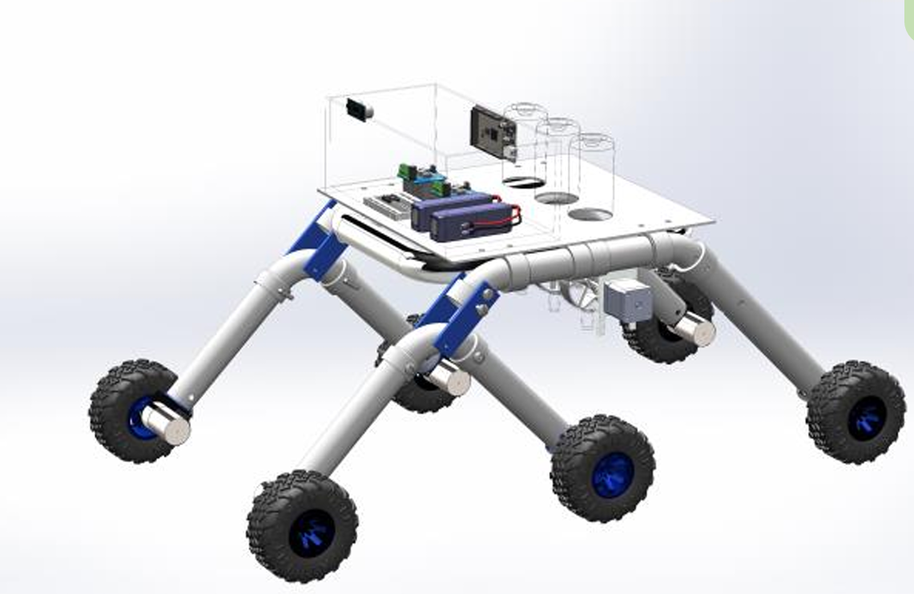
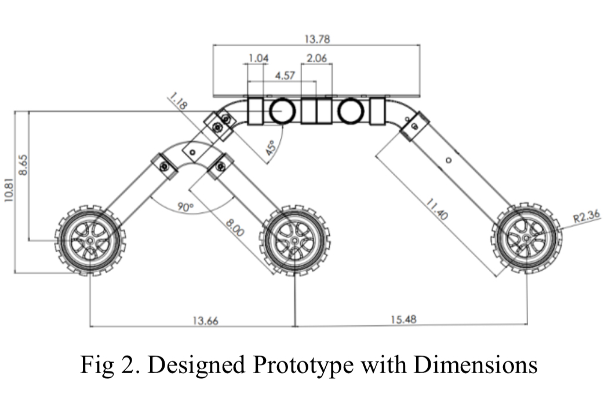
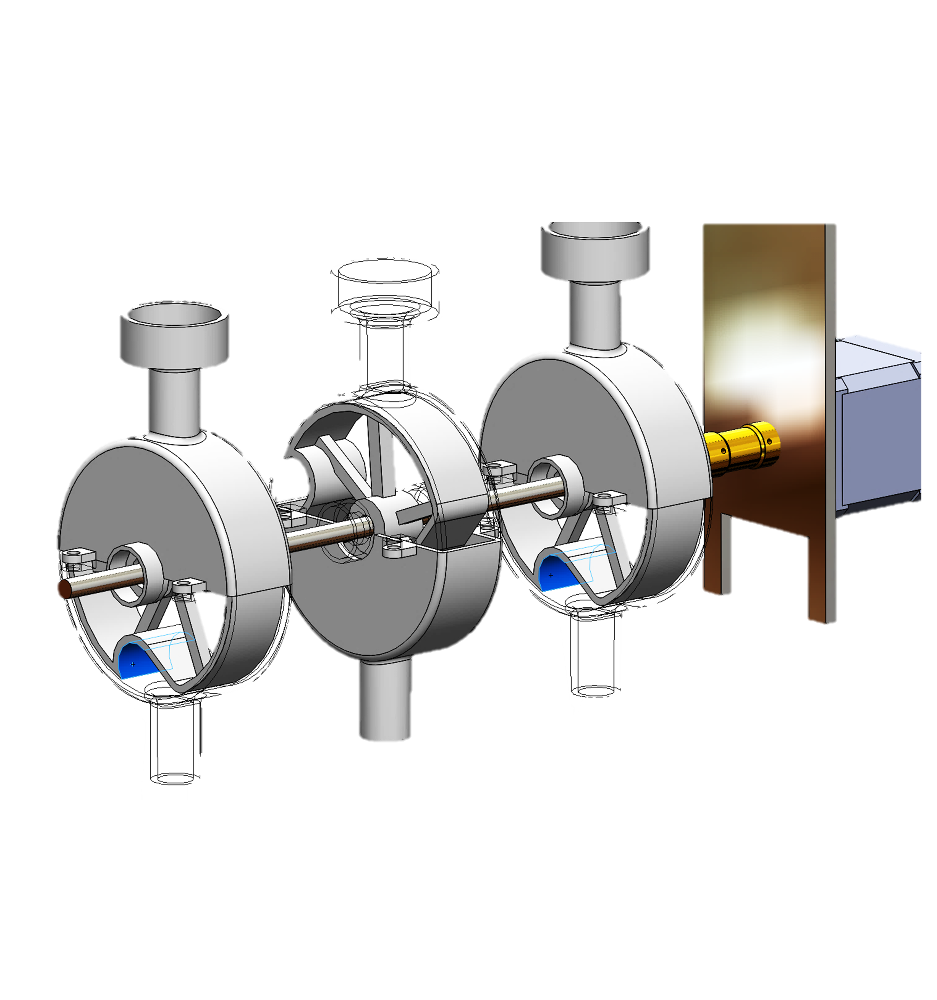
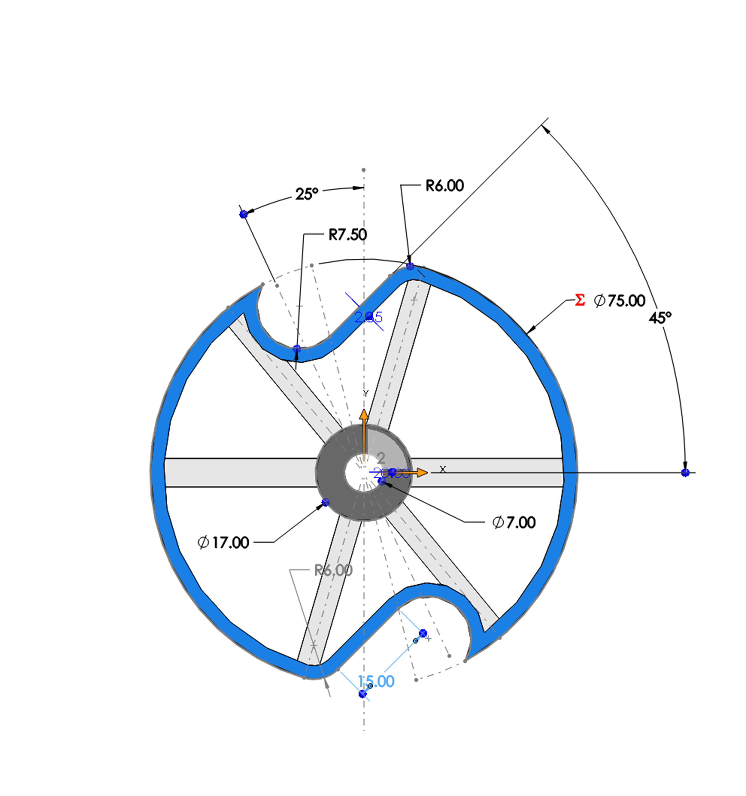
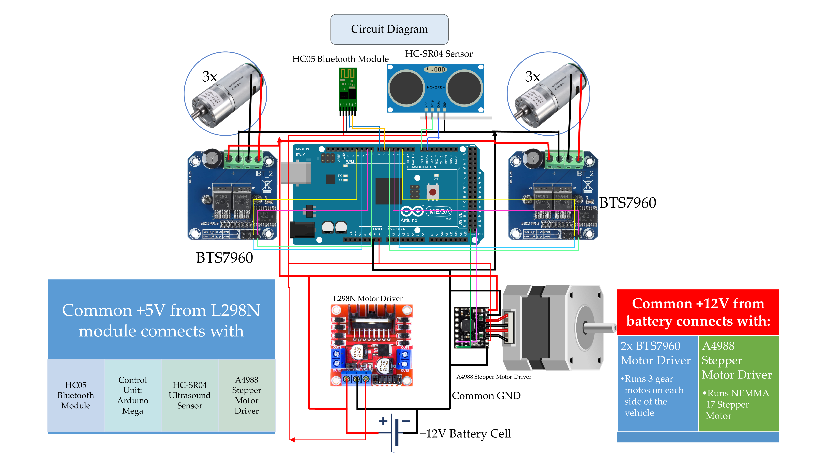
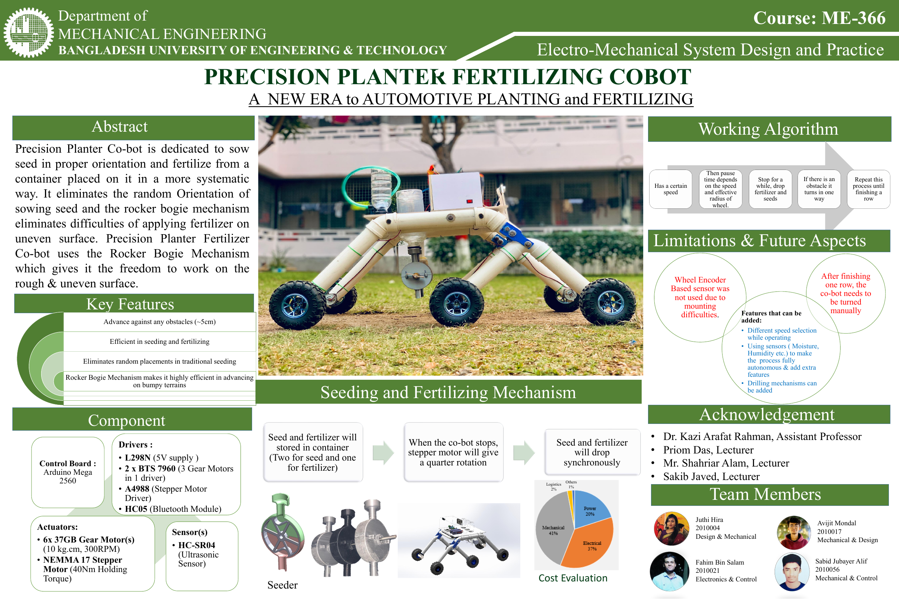
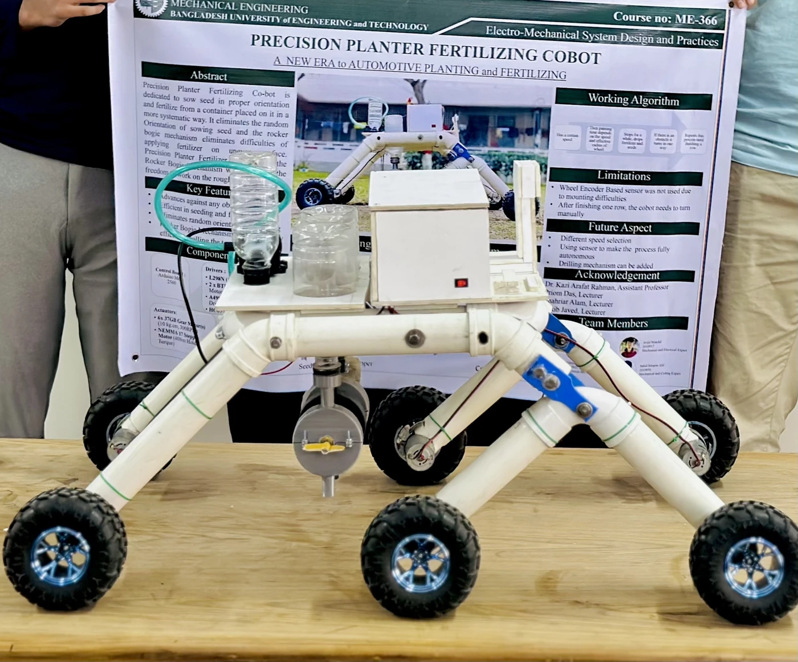
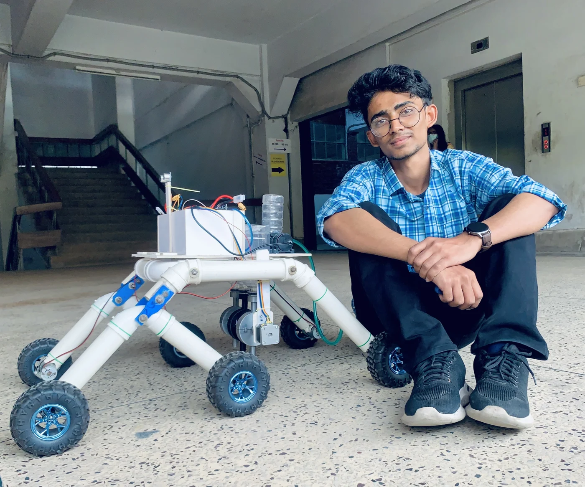

Precision Planter Co-Bot
A Cost-Effective Rocker-Bogie-Based Robot for Precision Seeding and Fertilizing.
A fabricated agricultural robot combining terrain-adaptive mobility with synchronized seed and fertilizer dispensing.
Watch the demonstration ↓
Engineering for the planting row
Manual seed placement and fertilizer application can be labor-intensive and inconsistent. This project explores a low-cost platform that combines controlled dispensing with the ability to travel over uneven ground.
The concept pairs a six-wheel rocker-bogie chassis with stepper-driven dispensing units. Its objectives are orderly seed placement, coordinated fertilizer delivery, terrain adaptability, and practical agricultural automation using accessible fabrication methods.
Mechanical design & development
Articulation before complexity
The six-wheel rocker-bogie chassis uses articulated links to accommodate changes in terrain. PVC pipes, mechanical joints, wheels, and geared motors provide a low-cost structure for carrying the dispensing assembly.
The SolidWorks model shows the chassis, component placement, and integrated seeding system. The dimensioned side view records the linkage geometry. The project’s torque estimate was 10.82 kg·cm per wheel for its design load; this is a design calculation, not a measured terrain-performance limit.




Precision dispensing mechanism
Three units, one coordinated drive
Two seed containers flank a central fertilizer container. A shared 10-inch shaft connects the three 3D-printed dispensing units to the stepper motor. Each housing encloses an internal rotating pusher, with bearings supporting the shaft.
During a pause in travel, a 90-degree step advances the mechanism to release material through the lower outlets. Movement timing is based on wheel-rotation parameters; it does not use wheel-encoder feedback.




Electronics & control architecture
An Arduino Mega 2560 coordinates Bluetooth commands, ultrasonic obstacle sensing, wheel motion, and the dispensing cycle. The HC-SR04 provides obstacle-distance input; the project description specifies a 30 cm detection threshold.
- Controller
- Arduino Mega 2560
- Obstacle sensing
- HC-SR04 ultrasonic sensor
- Remote control
- HC-05 Bluetooth module
- Wheel drive
- Two BTS7960 drivers · Six DC gear motors
- Dispensing drive
- A4988 driver · NEMA 17 stepper motor
- Power distribution
- 12 V battery · Common ground · 5 V rail via L298N module


Select a technical drawing to inspect it at full resolution.
See the Co-Bot in Action.
Working demonstration of the Precision Planter Co-Bot. Playback begins only when you choose.
Operating sequence
Sequence follows the supplied project description. Row-end turning remains manual; wheel encoders were not implemented.
Testing & validation
Stair climbing
The video documents the articulated chassis negotiating a step. No measured maximum climbing height is supplied.
Uneven-terrain mobility
The project documentation describes field tests on uneven surfaces and natural furrows, assessing mobility and dispenser operation.
Seed & fertilizer dispensing
The prototype was tested for seed and fertilizer release at specified intervals. Quantitative spacing, delivery-rate, and repeatability measurements remain to be added.
180-degree row-end turn
The supplied test description includes a row-end turning test. The prototype requires manual turning; this is not autonomous row navigation.
My role & contributions
My contributions to the group project:
- Conceptualization
- Mechanical design
- Writing — review and editing
Limitations & future improvements
Current prototype limitations
- Wheel encoders were not implemented because of mounting challenges.
- Manual row-end turning is required.
Proposed next steps
- GPS-based navigation
- Variable-speed control
- Solar power
- Modular agricultural attachments
These are future proposals, not implemented features.
Project poster


Prototype & presentation gallery



